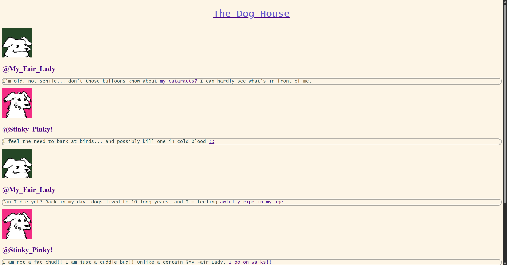

I wanted to create a mock early internet blog type website with my dogs being the participants, fit with their own profile pictures and username handles. I liked the idea of using hyperlinks to offer viewers more information about my dogs, sort of like peeking into what my life with them looks like. The index serves as the main "hub" where my dogs post their little thoughts. In the linked pages, I included hyperlinks returning to the main page for easy navigation. I think I was subconsciously influenced by the Disney Show "Dog with a Blog", and I didn't realize until mid-way through with this project. I had some difficulties getting the website published, but that was mainly due to being unfamiliar with github. Eventually, I fixed my issue and was able to successfully publish my website after a quick google search. Overall, I'm happy with the way my website looks and operates.
Visit The Dog House!